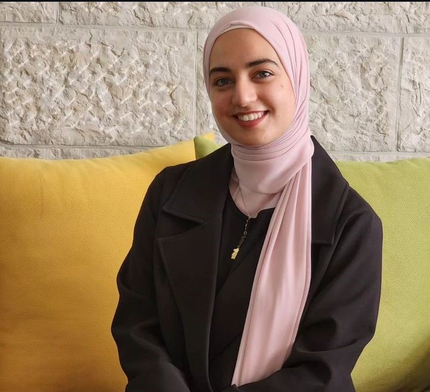

أهلا بك في مساقنا
شبكات الحاسوب-هذا خادم الويب الصغير
|| ENGLISH ||
قابل أعضاء الفريق
لانا مصفر
الرقم الجامعي: 1210455
أنا طالبة هندسة الحاسوب في سنتي الثالثة
لدي مهارات في البرمجة: جافا سكريبت،
جافا، سي، HTML/CSS, بايثون، ورياكت
كما أمتلك مهارات مثل العمل ضمن فريق
والعروض التقديمية وإدارة الوقت. كما أنني
أجيد حل المشاكل البرمجية والمنطقية, والتصميم
عملت في مشاريع في تطوير الويب والتطبيقات, وفحص العتاد
طارق أطرش
الرقم الجامعي: 1210122
اسمي طارق أطرش, أنا فلسطيني أبلغ من العمر 21 عامًا. هذا
العام، أكملت سنتي الثالثة كطالب في جامعة بيرزيت
تخصصي هو هندسة الحاسوب. لدي هوايات مختلفة لقضاء
وقت فراغي، بدءًا من كرة القدم، القراءة، وانتهاءً
بأفضلها وهو الدبكة. قمت بتنفيذ مشاريع تشمل الإلكترونيات
تطوير البرمجيات، وتصميم الأجهزة، باستخدام الفيريلوج
بشكل رئيسي

جنى سوالمة
الرقم الجامعي: 1211246
مهندسة حاسوب متحمّسة ومتحفّزة نحو النتائج، أتمتّع بأساس
قوي في تطوير البرمجيات والأجهزة. لدي خبرة في هياكل
البيانات وقاعدة البيانات، خبيرة في نظام التشغيل خاصة
في خوارزميات جدولة العمليات، اختبار فضل عدد من العمليات
والمواضيع للحاسوب. أنا قائدة في أي مكان يمكنني إدارة الأمور
والتعامل مع جميع الأشخاص، خاصة الأشخاص لصم، شغفي بتعلم
أشياء جديدة لا يتوقف، وهو حصري مع لغة البرمجة
W3Schools أنقر هنا لزيارة موقع
أنقر هنا لزيارة صفحة أخرى